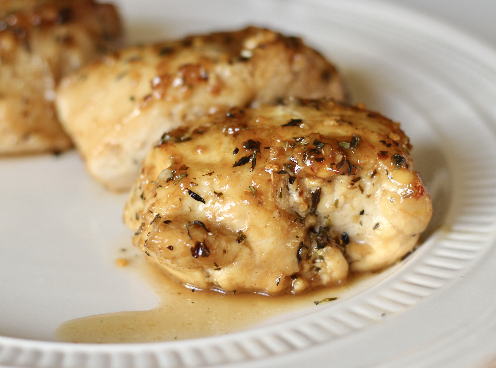

Garlic-Brown Sugar Chicken Thighs

- 8 eaches bone-in, skin-on chicken thighs
- 1 pinch salt and ground black pepper to taste
- 3 tablespoons unsalted butter, divided
- 4 cloves garlic, minced
- ¼ cup packed brown sugar
- 1 tablespoon honey
- ½ teaspoon dried oregano
- ¼ teaspoon dried thyme
- ¼ teaspoon dried basil
Directions
- Preheat the oven to 400 degrees F (200 degrees C).
- Season chicken thighs with salt and pepper.
- Melt 2 tablespoons butter in a large oven-proof skillet over medium-high heat. Add chicken, skin-side down, and sear until brown, 2 to 3 minutes per side. Remove chicken to a plate.
- Melt remaining butter in the skillet. Add garlic; cook and stir until fragrant, 1 to 2 minutes. Remove from heat and stir in brown sugar, honey, oregano, thyme, and basil until well combined. Return chicken to the skillet.
- Bake in the preheated oven until chicken is no longer pink at the bone and the juices run clear, 25 to 30 minutes. An instant-read thermometer inserted near the bone should read 165 degrees F (74 degrees C).
Nutrition Facts
Per Serving:
263.7 calories; protein 19.3g 39% DV; carbohydrates 9.5g 3% DV; fat 16.2g 25% DV; cholesterol 82.5mg 28% DV; sodium 86.5mg 4% DV.